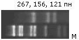
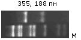
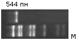
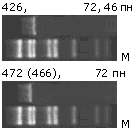

")

Министерство здравоохранения Российской Федерации
Смоленская государственная медицинская академия
Научно-исследовательский институт антимикробной химиотерапии
Научно-методический центр Минздрава РФ по мониторингу антибиотикорезистентности
Молекулярно-генетический метод выявления резистентности к цефалоспоринам у бактерий семейства Enterobacteriaceae, обусловленной продукцией β-лактамаз расширенного спектра CTX-M-типа
Методические рекомендации
Смоленск - 2001
Оглавление
- О публикации
- Введение
- Формула метода
- Показания и противопоказания к применению метода
- Материально-техническое описание метода
- Описание метода
- Эффективность использования метода
О публикации
Методические рекомендации разработаны в НИИ антимикробной химиотерапии Смоленской государственной медицинской академии, научно-методическом центре Минздрава РФ по мониторингу антибиотикорезистентности, г. Смоленск
Составители: М.В. Эйдельштейн, М.А. Пимкин
Рецензенты:
- С.С. Белокрысенко
- д.м.н., профессор, заведующий лабораторией проблем клинической микробиологии и контроля за госпитальными инфекциями Московской медицинской академии им. И.М. Сеченова МЗ РФ
- В.М. Говорун
- д.б.н., заведующий лабораторией генной инженерии и иммуногенетики НИИ физико-химической медицины МЗ РФ
- В.Н. Лазарев
- к.б.н., старший научный сотрудник лаборатории генной инженерии и иммуногенетики НИИ физико-химической медицины МЗ РФ
- И.А. Шагинян
- д.м.н., профессор, руководитель лаборатории молекулярной эпидемиологии госпитальных инфекций НИИЭМ им. Н.Ф. Гамалеи
Представлен метод диагностики и типирования β-лактамаз расширенного спектра СТХ-М-типа, основанный на использовании полимеразной цепной реакции (ПЦР) с праймерами, позволяющими амплифицировать внутренние фрагменты генов всех известных в настоящее время ферментов данной группы. С помощью последующего анализа полиморфизма длины рестрикционных фрагментов ПЦР-продуктов (ПЦР-ПДРФ) определяется принадлежность выявленных СТХ-М к одному из 4 основных генетических субтипов. Методические рекомендации предназначены для врачей-микробиологов.
Введение
Механизмы резистентности бактерий семейства Enterobacteriaceae к современным цефалоспоринам чрезвычайно разнообразны, однако, наибольшее значение в настоящее время имеет резистентность, связанная с продукцией хромосомно-кодируемых цефалоспориназ класса С и плазмидных β-лактамаз расширенного спектра (БЛРС) класса А. Ферменты CTX-M-типа представляют сравнительно новую стремительно распространяющуюся группу БЛРС. Отдельные вспышки заболеваний, вызванных CTX-M-продуцирующими энтеробактериями (Salmonella typhimurium, Escherichia coli, Klebsiella pneumoniae, Proteus mirabilis) были отмечены в странах Латинской Америки, Восточной и Южной Европы, Дальнего Востока. Данные недавно проведённых нами исследований свидетельствуют о широком распространении СТХ-М БЛРС среди нозокомиальных штаммов в России и Беларуси.
β-лактамазы CTX-M-типа эффективно гидролизуют многие оксиимино-беталактамы (цефотаксим, цефтриаксон, азтреонам), проявляя наибольшую активность в отношении цефотаксима (МПК продуцентов: 16-512 мг/л) и значительно меньшую в отношении цефтазидима (МПК продуцентов: 0,5-16 мг/л), хорошо ингибируются тазобактамом и, в меньшей степени, клавулановой кислотой. Выраженная устойчивость к цефотаксиму вследствие продукции CTX-M β-лактамаз может быть легко обнаружена с помощью фенотипических тестов, однако, точная диагностика СТХ-М может быть осуществлена только с помощью молекулярно-генетических методов.
Ферменты этой группы наиболее родственны хромосомным β-лактамазам Kluyvera ascorbata (KluA), Kluyvera cryocrescens (KluC), Rahnella aquatilis (RAHN-1), Serratia fonticola (FonA), Citrobacter sedlakii (Sed1), Klebsiella oxytoca (OXY) и характеризуются значительной (до 30%) вариабельностью нуклеотидных последовательностей кодирующих генов, что затрудняет их диагностику с помощью молекулярно-генетических методов. Анализ кодирующих последовательностей позволяет выделить 4 субтипа CTX-M, из которых 3 основных — родственные CTX-M-1 (MEN-1), CTX-M-2 и CTX-M-9, соответственно.
До настоящего времени различными авторами были предложены методы ПЦР-диагностики отдельных β-лактамаз CTX-M группы. Однако универсальный метод их выявления и типирования описан не был, что связано со значительной гетерогенностью последовательностей кодирующих генов. Таким образом, диагностика всех БЛРС CTX-M-типа требовала применения множества разнообразных молекулярных и фенотипических тестов.
Формула метода
Предложен метод диагностики и типирования CTX-M β-лактамаз, который отличается от существующих возможностью одновременного выявления всех ферментов данной группы за счёт ПЦР-амплификации кодирующих генов с праймерами, универсальными для различных генетических субтипов CTX-M. Дополнительная дифференциация субтипов осуществляется путем рестрикционного (ПДРФ) анализа ПЦР-продуктов с использованием эндонуклеаз Pst I и Pvu II.
Показания к применению метода
Метод применяется для изучения принципиальных механизмов и эпидемиологии резистентности к оксиимино-цефалоспоринам у представителей семейства Enterobacteriaceae — выявления с помощью описанных праймеров генов CTX-M ферментов у большинства клинически значимых видов энтеробактерий.
Противопоказания к применению метода
Вследствие выраженной гомологии ПЦР-праймеров и участков видоспецифических генов Kluyvera spp. (kluA, kluC), R.aquatilis (blaRAHN-1), C.sedlakii (sed1) и K.oxytoca (oxy-2), метод непригоден для исследования клинических штаммов данных видов микроорганизмов.
Материально-техническое описание метода
- Стандартное оборудование и материалы для микробиологической и ПЦР-лабораторий.
- Контрольные штаммы:
- E.coli C600 — отрицательный контроль (№ С600 из коллекции НИИАХ СГМА, приказ МЗ РФ № 50 от 9 февраля 2000 г.);
- E.coli TOP10 (CTX-M-4) — положительный контроль (№ T10CTX4 из коллекции НИИАХ СГМА, приказ МЗ РФ № 50 от 9 февраля 2000 г.);
- Citrobacter freundii 2525 (CTX-M-3) - положительный контроль (№ CF2525CTX3 из коллекции НИИ АХ СГМА, приказ МЗ РФ № 50 от 9 февраля 2000 г.).
- Лизирующий раствор — Lyse-N-GoTM PCR Reagent (№ 78882 по каталогу PIERCE, США).
- Taq ДНК-полимераза в парафиновых гранулах для ПЦР с «горячим стартом» — TaqBead™ Hot Start Polymerase, включая 10X реакционный буфер (500 мМ KCl, 100 мМ Трис-HCl (pH 9,0), 1% Triton X-100), 25 мМ раствор MgCl2 (№ M5661 по каталогу Promega, США);
- Смесь дНТФ (дАТФ, дСТФ, дГТФ, дТТФ) (№ С1145 по каталогу Promega, США).
- Рестриктазы Pst I (15000 ед./мл) и Pvu II (12000 ед./мл), включая 10X буфер для рестрикции (100 мМ Трис-ацетат (pH 7,5), 100 мМ ацетат магния, 500 мМ ацетат калия) (№ 27-0886-03 и 27-0960-01 по каталогу Amersham Pharmacia Biotech, США).
- Маркер молекулярной массы ДНК, например, рестрикционные фрагменты pUC18-Hae III (№ D 6293 по каталогу Sigma, США).
- «Методические рекомендации по проведению работ в диагностических лабораториях, использующих метод полимеразной цепной реакции» (№ 19/52-17, утверждены Государственным комитетом санитарно-эпидемиологического надзора РФ 22 июня 1995 г.).
Описание метода
Выделение ДНК
- Исследуемые штаммы рассеваются до отдельных колоний на чашки с агаром. Чашки инкубируют в термостате при 37°С в течении 18-20 часов.
- С помощью стерильной 1-мкл петли 2-3 одинаковые колонии (1/2 петли) переносятся в 0,5-мл центрифужную пробирку с 400 мкл стерильной бидистиллированной или деионизированной воды и суспендируются с помощью шейкера.
- Микробные клетки осаждаются центрифугированием в течение 2 мин при 7000 g.
- После этого необходимо аккуратно удалить супернатант, добавить 20 мкл лизирующего раствора и перемешать путем пипетирования.
- Пробирки инкубируются в твердотельном термостате в течение 4 мин при 95°С, затем центрифугируются в течение 2 мин при 7000 g.
- Для ПЦР используется 5 мкл супернатанта.
ПЦР-амплификация фрагментов blaCTX-M генов
- Конечный объём ПЦР-смеси для проведения индивидуальных реакций амплификации составляет 50 мкл с учётом добавления матричной ДНК. Необходимые реакционные компоненты вносятся в соответствии с пропорциями указанными в таблице 1, исходя из количества анализируемых штаммов.
- Реакционная смесь распределяется по 45 мкл в индивидуальные пробирки для ПЦР.
- С помощью стерильного шпателя в каждую пробирку вносится 1 гранула TaqBead™ полимеразы (~1,25 ед. Taq полимеразы).
- В каждую пробирку добавляется 5 мкл препарата ДНК.
- При использовании термоциклера без нагревающейся крышки в каждую пробирку необходимо добавить по 1 капле минерального масла поверх реакционной смеси.
- Амплификация проводится согласно протоколу, представленному в таблице 2.
Таблица 1. Приготовление амплификационной смеси
| Компоненты | Объём1, мкл | Конечная концентрация2 |
|---|---|---|
| 10X реакционный буфер | 5 | 1X |
| Смесь дНТФ (10 мМ каждого) | 4 | 0,2 мМ (каждого) |
| Раствор MgCl2 (25 мМ) | 4 | 2 мМ |
| Смесь праймеров3 (12.5 мкМ каждого) | 2 | 0,5 мкМ (каждого) |
| Стерильная Milli-Q вода | 30 | |
| Общий объем | 45 |
1 объём, добавляемый в расчете на одну реакцию
2 концентрация после добавления всех компонентов и образца ДНК
3 CTX-M/F': 5'-TTTGCGATGTGCAGTACCAGTAA-3' и CTX-M/R': 5'-CGATATCGTTGGTGGTGCCATA-3'
Таблица 2. Рекомендуемые условия амплификации*
| Этап | Температура, °С | Продолжительность, сек | Количество циклов |
|---|---|---|---|
| Начальная денатурация | 94 | 120 | |
| Денатурация | 95 | 20 | 35 |
| Отжиг | 51 | 30 | |
| Элонгация | 72 | 30 | |
| Конечная элонгация | 72 | 150 |
* данный протокол оптимизирован для термоциклера DNA Engine PTC-200 (MJ Research, США).
Использование других приборов может требовать настройки режима амплификации.
Анализ ПЦР-продуктов с помощью электрофореза
- Электрофоретическая камера для проведения разделения должна быть подготовлена предварительно.
- Смешиваются по 7 мкл каждого образца и 2 мкл буфера для нанесения ДНК (50% 0,5X TBE, 50% глицерина, 0,25% бромфенолового синего). Образцы и маркер молекулярной массы вносятся в соответствующие лунки 3% агарозного геля.
- Разделение проводится с использованием 0,5X TBE буфера (44,5 мМ Трис-борат, 44,5 мM борная кислота, 1 мМ ЭДТА) при напряженности электрического поля 6 В/см в течение 30 мин.
- Гель окрашивается в течение 60 мин. в растворе бромистого этидия (1 мг/л) и визуализируется с помощью УФ-трансиллюминатора.
Рестрикционный (ПДРФ) анализ ПЦР-продуктов
- В отдельных 0,5-мл пробирках смешиваются 10 мкл амплифицированной ДНК, 1,2 мкл 10X рестрикционного буфера, 0,5 мкл Pst I (15000 ед./мл) и 0,2 мкл Pvu II (12000 ед./мл).
- Рестрикция проводится при температуре 37°C в течение 2 часов.
- Электрофоретический анализ полученных рестрикционных фрагментов проводится согласно пп. 14-17.
Интерпретация результатов анализа
- Оценка размеров амплификационных фрагментов ДНК и продуктов их рестрикции проводится путем сравнения их электрофоретической подвижности с подвижностью маркерных фрагментов ДНК. Ожидаемый размер амплификационных фрагментов blaCTX-M генов — 543 пн. На рисунке 1 представлены результаты анализа цефотаксим-резистентных клинических изолятов S. typhimurium и контрольных штаммов.
- На основании результатов рестрикционного анализа выявленные гены CTX-M β-лактамаз могут быть отнесены к одному из 4 субтипов (таблица 3).
Рисунок 1. Электрофореграмма продуктов амплификации blaCTX-M генов
M — маркер молекулярной массы (pUC18-Hae III); 1-13 — CTX-M-продуцирующие клинические изоляты S. typhimurium; 14 — E. coli TOP10 (CTX-M-4); 15 — C. freundii 2525 (CTX-M-3); 16 — K. ascorbata T861; 17 — E. coli С600; 18 — E. coli C600 (TEM-3); 19 — K. pneumonieae (SHV-1, SHV-2).
Таблица 3. Дифференциация основных субтипов CTX-M на основании ПДРФ-анализа.
| Субтип | Количество сайтов рестрикции | Pst I - Pvu II рестрикционные фрагменты |
|
|---|---|---|---|
| Pst I | Pvu II | ||
| CTX-M-1: CTX-M-1, -3, -10, -11, -12, -15, -22, UOE-1 |
0 | 2 |  |
| CTX-M-2: CTX-M-2, -4, -5, -6, -7, -20, Toho-1, KluA |
1 | 0 |  |
| CTX-M-8 | 0 | 0 |  |
| CTX-M-9: CTX-M-9, -13, -16 CTX-M-14, -15, -17, -18, -19, -21, Toho-2 |
1 0 |
1 1 |
 |
На рисунке 2 представлены результаты дифференциации CTX-M-кодирующих генов у нозокомиальных штаммов E. coli и K. pneumoniae.
Рисунок 2. Пример дифференциации blaCTX-M генов
M — маркер молекулярной массы (pUC18-Hae III); 1-8 — нозокомиальные штаммы E. coli, продуцирующие β-лактамазы группы CTX-M-2; 9-15 — нозокомиальные штаммы K. pneumoniae, продуцирующие β-лактамазы группы CTX-M-1; 16 — C. freundii 2525 (CTX-M-3); 17 — E. coli TOP10 (CTX-M-4).
Эффективность использования метода
Оценка чувствительности и специфичности метода была проведена в лаборатории молекулярной микробиологии НИИ антимикробной химиотерапии путём исследования референтных штаммов E. coli, K. pneumoniae, Serratia marcescens, Enterobacter cloacae, C. diversus, Proteus mirabilis, Proteus vulgaris, Kluyvera ascorbata, а также более 200 клинических изолятов E. coli, K. pneumoniae, P. mirabilis, S. typhimurium, резистентных к оксиимино-β-лактамам. Количественная оценка эффективности выявления CTX-M β-лактамаз с помощью описанного метода по сравнению с ранее предложенными не представляется возможной вследствие отсутствия абсолютной специфичности (оценка антибиотикограммы, изоэлектрическое фокусирование) или универсальности (ПЦР отдельных генов) этих подходов. Специфичность метода подтверждена результатами параллельного определения чувствительности исследуемых культур к цефалоспоринам III поколения: все штаммы с положительным результатом амплификации blaCTX-M генов проявляли высокий уровень резистентности к цефотаксиму и цефтриаксону и пониженную чувствительность к цефтазидиму.
Метод показал свою эффективность для изучения механизмов резистентности и эпидемиологии полирезистентных клинических штаммов S. typhimurium, выделенных в Санкт-Петербурге (n=5), Москве (n=1) и в восьми стационарах Беларуси (n=25) в 1996-2000 гг. При этом, у всех цефотаксим-резистентных сальмонелл выявлена продукция БЛРС, относящихся к группе CTX-M-2.
С помощью предложенного метода показано, что β-лактамазы CTX-M-типа составляют до 30% от общего числа БЛРС, продуцируемых нозокомиальными штаммами E. coli, K. pneumoniae и P. mirabilis (n=176), выделенными в различных регионах России в 1997-1998 гг., а в отдельных центрах (Казань, Новосибирск, Ставрополь, Томск) их частота достигает 80-95%.
Размещено: 05.02.2003